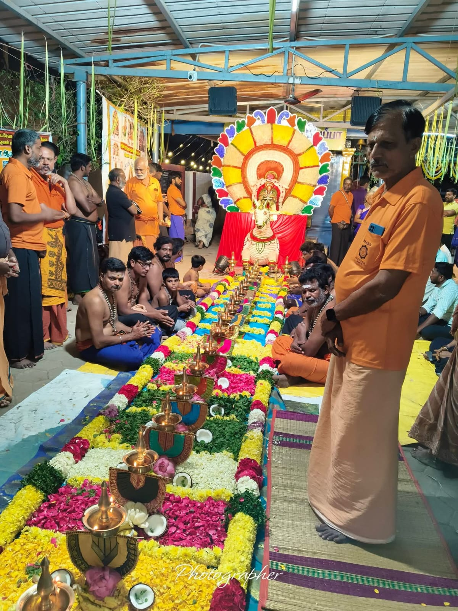
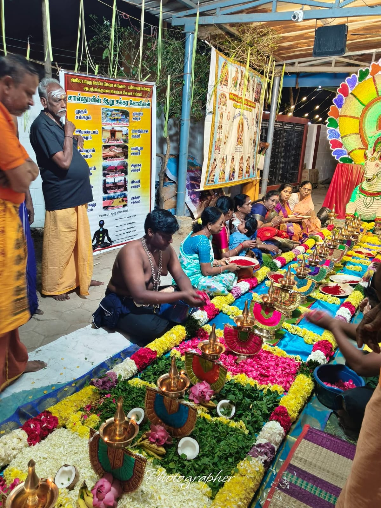
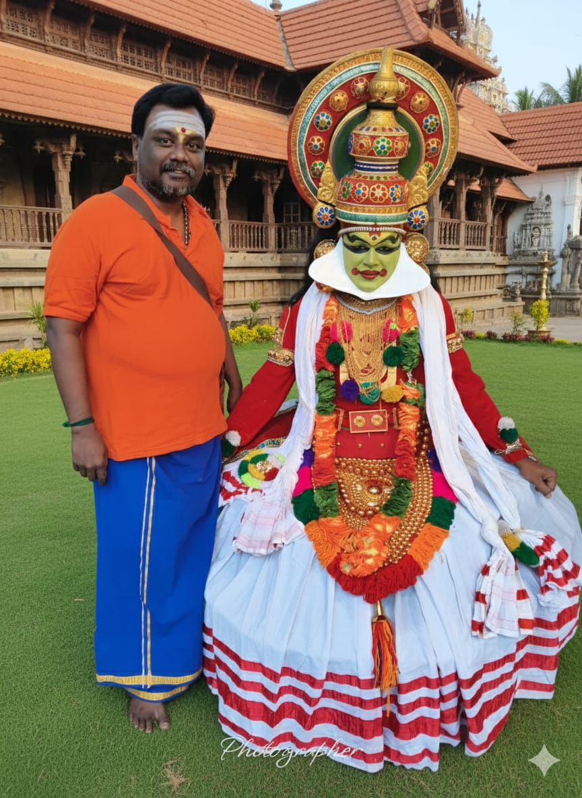

About ABASS Trust
Eight decades of steadfast devotion to Lord Dharma Sastha, serving devotees, fostering cultural harmony, and extending compassionate community welfare.
Years of Dedicated Ayyappa Seva
Established in 1946 in Zamin Pallavaram, Chennai, Abhath Bhanthavan Ayyappa Seva Sangham (ABASS) has grown from a humble gathering of devout Guruswamys into an esteemed Public Charitable Trust serving tens of thousands of pilgrims and local families.
Eight Decades of Spiritual Evolution
Trace the key milestones in the rich history of ABASS from 1946 to the 80th Jubilee celebration.
Foundation & Early Sangham Gathering
Pious elders and senior Guruswamys in Zamin Pallavaram instituted the first congregational Mandala Kalam vratham and community bhajans.
Establishment of Annual 18 Padi Pooja
Introduced the traditional 18 Steps floral altar worship with brass deepams, creating an iconic sacred landmark in Chennai suburbs.
Constitution as Public Charitable Trust
Formally registered as 'Abhath Bhanthavan Ayyappa Seva Sangham Trust' to expand religious, educational, Annadhaanam and medical relief activities.
80th Diamond Jubilee Celebration
Celebrating 80 unbroken years of spiritual service, youth guidance, cultural preservation and daily Annadhaanam initiatives.
A trust dedicated to devotion and community wellbeing
ABASS works across religious, educational, cultural and welfare-oriented activities, as set out in the objects of its Trust Deed.
Religious & Spiritual
Conducting authentic temple poojas, 18 Padi Pooja, Vilakku Pooja, and guiding pilgrims in the strict Sastha vratham codes.
Education & Gurukulam
Supporting student scholarships, educational aid, Vedic learning, and moral development for underprivileged youth.
Culture & Music
Encouraging devotional music, Namasankeerthanam, traditional instruments, and classical art forms in temple festivals.
Annadhaanam & Relief
Mass Annadhaanam feeding thousands, medical checkups, senior citizen care, and disaster relief for the needy.
Divine Glimpses of Seva in Action
Authentic photographs capturing the spirit of prayer, seva, and community brotherhood at ABASS.




